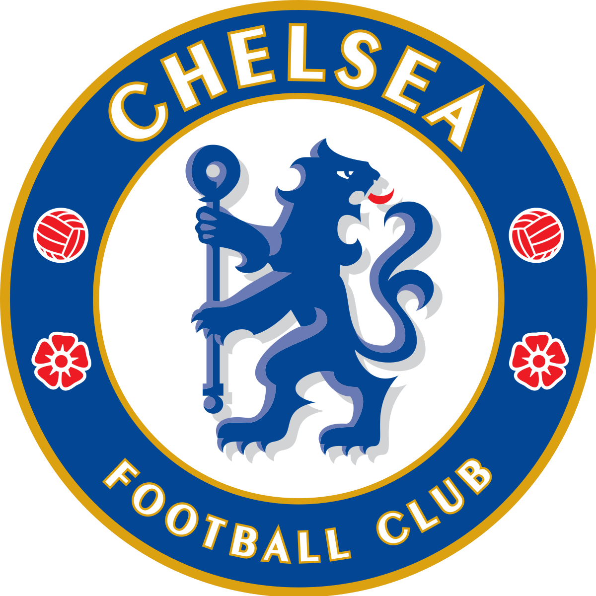

Ludnica od derbija: Četiri gola i atomski nogomet koji oduzima dah, remi Chelseaja i Liverpoola

Potezi, akcije, sjajni golovi među kojima je prednjačio onaj Matea Kovačića... Derbi na Stamford Bridgeu bio je za prste polizati, no najveći dobitnik je Manchester City, kojem najviše odgovara remi
U derbiju 21. kola engleskog nogometnog prvenstva Chelsea i Liverpool su na Stamford Bridgeu odigrali 2-2, a za domaći sastav fenomenalan pogodak postigao je hrvatski reprezentativac Mateo Kovačić.


Zadnja utakmica
2-2

Copyright Ⓒ Martin Šalek